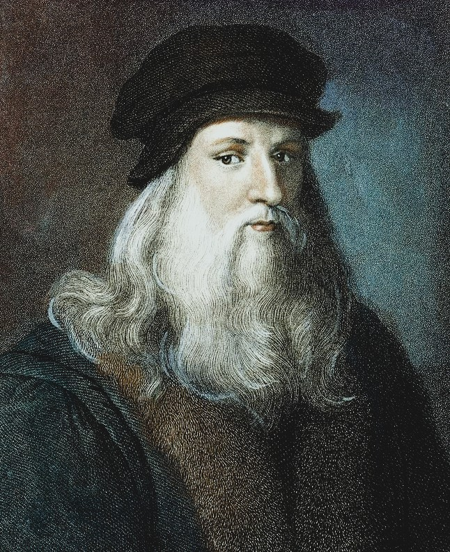

Who Was Leonardo da Vinci?
Leonardo da Vinci (1452–1519) was an Italian Renaissance artist, inventor, engineer, anatomist, natural philosopher, and polymath whose investigations crossed the boundaries between art, science, mathematics, engineering, and the study of nature. He is best known for paintings such as the Mona Lisa and The Last Supper, but his surviving notebooks reveal an intellectual life far broader than painting. Leonardo studied the human body, water, flight, optics, geology, plants, mechanics, architecture, military engineering, and the mathematical principles underlying natural phenomena.
Leonardo was not a philosopher in the institutional or systematic sense of thinkers such as Plato, Aristotle, Augustine, or Kant. He did not produce a single philosophical treatise presenting a complete system of metaphysics, ethics, epistemology, or political philosophy. His philosophical importance instead emerges from the way he approached knowledge. He repeatedly asked how things work, examined phenomena directly, compared observations, produced drawings and diagrams, and attempted to identify the causes and principles underlying what he observed.
His intellectual method makes Leonardo particularly important to the history of natural philosophy. He distrusted unsupported claims and repeatedly emphasized the importance of experience, observation, mathematical reasoning, and testing. At the same time, his notebooks also contain speculation, hypotheses, unfinished investigations, and imaginative proposals. Leonardo therefore should not simply be described as a modern scientist before science existed; he belonged to the intellectual world of the Renaissance, while developing methods of investigation that anticipated important aspects of later scientific practice.
Leonardo's thought was also distinctive because he did not regard art, engineering, and the investigation of nature as completely separate activities. Drawing could be a method of investigation, anatomy could improve painting, mathematics could explain proportion and perspective, and the observation of water or bird flight could inspire engineering designs. His work therefore provides one of the clearest examples of Renaissance interdisciplinary thinking.
To understand Leonardo philosophically, it is therefore necessary to study more than his famous paintings. His life, education, notebooks, theories of observation, understanding of nature, use of mathematics, anatomical investigations, artistic theory, religious outlook, engineering projects, and intellectual relationships together reveal a thinker deeply concerned with one fundamental question: how can human beings acquire reliable knowledge of the world?
Leonardo da Vinci: Quick Facts
- Full name — Leonardo di ser Piero da Vinci
- Born — 15 April 1452, Vinci, Republic of Florence
- Died — 2 May 1519, Amboise, Kingdom of France
- Period — Italian Renaissance
- Traditions — Renaissance humanism, natural philosophy, artistic theory, empirical investigation
- Fields — Painting, drawing, anatomy, engineering, mechanics, optics, hydraulics, geology, botany, architecture and mathematics
- Famous works — Mona Lisa, The Last Supper, Vitruvian Man
- Major surviving source — Leonardo's notebooks and manuscript collections
- Philosophical importance — His approach to observation, experience, causation, mathematics, nature and interdisciplinary knowledge
- Important distinction — Leonardo was a Renaissance polymath and natural philosopher rather than a systematic philosopher in the conventional sense
Early Life and Childhood of Leonardo da Vinci

Leonardo was born on 15 April 1452 near the Tuscan town of Vinci in the territory of the Republic of Florence. He was the son of Ser Piero, a notary, and Caterina. Because Leonardo was born outside marriage, he did not follow the conventional educational path that would have prepared a legitimate son of a professional family for a university or legal career. Instead, his early circumstances contributed to a life that developed differently from the scholastic and professional routes followed by many learned men of Renaissance Italy.
Leonardo's childhood environment exposed him to the landscapes, plants, animals, waterways, hills, and geological formations of Tuscany. Although later stories about his childhood sometimes contain legendary elements, his surviving work demonstrates an extraordinary lifelong sensitivity to the visual and physical features of the natural world. His fascination with water, movement, birds, plants, rocks, and human bodies became increasingly sophisticated as he matured.
Unlike many Renaissance intellectuals who received extensive formal education in Latin and classical literature, Leonardo was comparatively unconventional in his education. His writing often remained in the vernacular rather than polished scholarly Latin. This did not prevent him from becoming intensely intellectual; instead, he developed knowledge through drawing, practical work, observation, workshop experience, mathematical study, and conversations with learned specialists.
This background is important for understanding Leonardo's philosophy of knowledge. His intellectual identity developed outside the traditional image of the university philosopher. He learned through making, seeing, measuring, comparing, drawing, and investigating. The workshop and the natural world became important sites of intellectual inquiry alongside books and formal scholarship.
Leonardo's early life therefore helps explain why his later intellectual work is so difficult to classify. He was simultaneously an artist, craftsman, engineer, investigator, designer, and student of nature. His thought developed through the interaction of these activities rather than through a single academic discipline.
Leonardo da Vinci's Education and Intellectual Formation
Leonardo did not attend a university in the manner expected of a learned Renaissance scholar. His most important formal intellectual formation took place through the Florentine workshop system. As a young man he entered the workshop of Andrea del Verrocchio, where he encountered painting, sculpture, drawing, mechanics, geometry, materials, perspective, and practical techniques.
The workshop environment was significant because Renaissance artistic production involved much more than the execution of pictures. Artists had to understand materials, proportion, perspective, architecture, geometry, light, optics, and the physical behavior of objects. Leonardo's development therefore demonstrates how practical craftsmanship could become a route to intellectual investigation.
Leonardo also gradually acquired mathematical and scientific knowledge from books, teachers, colleagues, and other specialists. His later notebooks show engagement with Euclidean geometry, proportion, mechanics, optics, anatomy, engineering, and natural philosophy. His intellectual development was consequently cumulative rather than isolated: he absorbed inherited knowledge while repeatedly testing it against his own observations.
Leonardo's education illustrates an important feature of Renaissance intellectual culture. The boundary between artist, engineer, craftsman, and natural philosopher was more fluid than the modern division between university departments. Leonardo exploited this fluidity, using skills acquired in one field to investigate problems in another.
His intellectual formation also explains why drawing became central to his thought. For Leonardo, a drawing could record an observation, explain a mechanism, test an idea, communicate an argument, or generate a new hypothesis. Visual representation was therefore not merely decoration; it could function as an instrument of reasoning.
Leonardo da Vinci and the Renaissance
Leonardo lived during the Italian Renaissance, a period characterized by renewed engagement with classical antiquity, humanist scholarship, developments in the arts, political transformation, expanding trade, and new forms of intellectual inquiry. Florence, Milan, and other Italian centers provided environments in which artists, engineers, scholars, architects, physicians, merchants, rulers, and humanists interacted.
Renaissance humanism encouraged greater attention to human capacities, classical texts, rhetoric, history, moral philosophy, and the study of human experience. Leonardo participated in this culture, but his interests often moved beyond the literary humanism associated with university-trained scholars. He devoted extraordinary attention to the physical world, including subjects that required direct observation and technical investigation.
The Renaissance also inherited important elements of medieval natural philosophy and scholastic thought. Leonardo did not simply replace this intellectual tradition with modern science. His notebooks reveal a mixture of inherited concepts, observations, mathematical reasoning, analogies, hypotheses, and speculative ideas. His importance lies partly in how he transformed these materials through persistent investigation.
Leonardo's career also unfolded in a world shaped by powerful courts and patrons. His work for the Sforza court in Milan, later activities in Florence and Rome, and final years in France placed him within networks of political power, artistic patronage, military engineering, and court culture. His intellectual projects were therefore connected not only with abstract curiosity but also with practical Renaissance society.
Understanding this context prevents the common mistake of portraying Leonardo as a completely isolated genius who somehow appeared centuries ahead of his time. He was extraordinary, but he was also a product of Renaissance culture. His originality emerged from the way he combined existing traditions with unusually persistent observation, visual analysis, mathematical reasoning, and inventive experimentation.
Leonardo's Life and Career in Florence, Milan, Rome, and France
Leonardo in Florence
Florence was central to Leonardo's early artistic and intellectual development. After training in Verrocchio's workshop, he established himself as an artist while continuing to develop interests in engineering, anatomy, mechanics, optics, and natural phenomena. Florence exposed him to a competitive artistic environment in which painting was increasingly connected with intellectual skill and knowledge of nature.
Leonardo in Milan
Leonardo spent a substantial part of his career in Milan under the patronage of Ludovico Sforza. His activities there extended far beyond painting. He worked on architectural proposals, theatrical designs, military engineering, hydraulic projects, sculpture, and scientific investigations. Milan became an especially important period in the development of his interdisciplinary identity.
Leonardo's Later Years
Leonardo later returned to Florence and worked in different political and artistic environments. His famous rivalry and intellectual competition with Michelangelo formed part of the extraordinary artistic culture of early sixteenth-century Florence. He also worked for Cesare Borgia for a period, producing maps and examining fortifications and infrastructure.
Leonardo in Rome
Leonardo spent part of his later career in Rome, where he encountered a powerful concentration of artistic and intellectual activity. However, his opportunities there were more constrained than those enjoyed by some younger contemporaries. His investigations continued, including work in anatomy and natural philosophy.
Leonardo in France
In his final years Leonardo entered the service of King Francis I of France and lived near Amboise. He continued working on drawings, scientific questions, and projects even though his ability to undertake large artistic commissions had declined. He died on 2 May 1519.
Was Leonardo da Vinci a Philosopher?
Leonardo da Vinci can reasonably be studied as a philosopher, but the qualification matters. He did not construct a systematic philosophical doctrine comparable to the major authors of the Western philosophical canon. There is no single work in which he sets out a complete theory of reality, knowledge, morality, politics, and human nature.
His philosophical significance instead lies in his method of inquiry and in the questions that repeatedly appear throughout his notebooks. He asked what causes natural phenomena, how human beings can acquire reliable knowledge, how mathematical relationships operate in nature, how the body functions, and how visual representation can communicate knowledge.
For this reason, Leonardo is often more accurately described as a Renaissance natural philosopher and polymath. His work occupies a transitional position in intellectual history. He belongs to the Renaissance world of natural philosophy while also displaying practices associated with later empirical and scientific investigation.
Studying Leonardo philosophically therefore requires attention to the structure of his inquiry rather than searching for a conventional list of philosophical doctrines. His philosophy is distributed across observations, diagrams, questions, hypotheses, artistic writings, anatomical studies, mechanical investigations, and reflections on experience.
Leonardo da Vinci's Theory of Knowledge
One of the most important philosophical themes in Leonardo's thought is the problem of knowledge. He repeatedly emphasized experience and observation, particularly in investigations of nature. Rather than accepting an explanation simply because it appeared in an authoritative source, he attempted to examine phenomena for himself and determine whether an explanation corresponded to observable reality.
Leonardo's approach should not, however, be reduced to the claim that "everything comes from the senses." His investigations combined sensory observation with memory, comparison, reasoning, geometry, mathematics, analogy, and attempts to identify causal relationships. Observation supplied material for inquiry, but intellectual interpretation remained necessary.
His notebooks repeatedly show a cycle of questioning: observe a phenomenon, record it visually or verbally, propose an explanation, compare the explanation with further observations, and revise the understanding when necessary. This makes his notebooks valuable evidence for the development of systematic approaches to natural inquiry.
Leonardo also recognized the limitations of human perception. The eye can provide valuable information, but seeing is not automatically equivalent to understanding. The observer must learn how to distinguish relevant features, identify patterns, measure relationships, and reason about causes.
His theory of knowledge can therefore be understood as a disciplined form of experiential inquiry in which observation and reasoning cooperate. This is one reason Leonardo remains important to discussions of empiricism, scientific methodology, visual knowledge, and interdisciplinary research.
Leonardo da Vinci and the Philosophy of Observation
Observation was one of the foundations of Leonardo's intellectual practice. He did not merely look at objects; he attempted to determine their structure, movement, proportions, transformations, and relationships. His drawings of plants, animals, water, human bodies, machines, and geological formations demonstrate an unusually sustained attention to visual detail.
Leonardo's observational practice involved repeated examination. A single observation could generate a new question, which then required further investigation. This made observation an active intellectual process rather than passive seeing. The observer had to learn what to look for and how to represent what had been discovered.
This helps explain the importance of the idea often associated with Leonardo's practice, saper vedere, or "knowing how to see." The expression captures more than ordinary eyesight. It suggests the intellectual discipline required to perceive structure, proportion, movement, causes, and relationships within phenomena.
Leonardo's approach is particularly important for the philosophy of science because observation is never entirely separate from concepts and questions. What investigators notice depends partly on what they are attempting to understand. Leonardo's drawings therefore reveal both what he observed and the theoretical problems he was trying to solve.
Leonardo da Vinci on Causes and Natural Laws
Leonardo was deeply interested in the causes of natural phenomena. He did not want merely to describe what happened; he repeatedly asked why it happened. Questions about motion, water, flight, light, anatomy, growth, erosion, and mechanical action frequently became investigations into the underlying causes of observable events.
This concern with causation connects Leonardo with the long tradition of natural philosophy. He attempted to identify regularities in nature and to express relationships through diagrams and mathematical reasoning. His investigations therefore moved repeatedly between particular observations and broader attempts to formulate general principles.
Leonardo's understanding of natural laws was not identical to the mature mathematical physics of later figures such as Galileo or Newton. His notebooks contain unfinished arguments and ideas that do not always reach the level of a fully demonstrated law. Nevertheless, his persistent search for regularity and causal explanation was an important feature of his intellectual method.
The concept of causation also connects his apparently different interests. The movement of water, the motion of muscles, the flight of birds, and the operation of machines could all be studied as physical processes. Leonardo sought common principles wherever possible, contributing to his holistic conception of nature.
Leonardo da Vinci, Mathematics, and the Structure of Nature
Mathematics occupied an increasingly important place in Leonardo's intellectual life. He studied geometry, proportion, perspective, measurement, mechanical relationships, and mathematical representations of physical forms. Mathematics provided a way of moving from visual observation toward precise relationships.
Leonardo's friendship and intellectual association with the mathematician Luca Pacioli was particularly significant. Leonardo contributed illustrations to Pacioli's work on proportion, including the famous geometric studies associated with De divina proportione. Their collaboration demonstrates the close relationship between art, geometry, and mathematical culture during the Renaissance.
Mathematical proportion was also central to Leonardo's artistic practice. Perspective, human anatomy, architectural form, and visual composition required the ability to understand relationships between parts and wholes. Mathematics therefore functioned not simply as abstract calculation but as a tool for understanding form.
Leonardo's mathematical interests reveal a broader philosophical assumption: nature possesses structures and relationships that human reason can investigate. His search for proportion and measurable relationships contributed to his belief that the apparent complexity of the world could be approached through underlying order.
Leonardo da Vinci and Natural Philosophy
Leonardo's natural philosophy centered on the investigation of the physical world. He studied nature as a collection of interacting processes rather than as a series of unrelated objects. Water flowed, bodies moved, plants grew, rocks changed, light traveled, and machines operated according to relationships that could be investigated.
His notebooks show particular fascination with water. He studied currents, waves, whirlpools, erosion, canals, and the movement of water around obstacles. These investigations were simultaneously scientific and practical, because understanding water could contribute to engineering projects while also revealing broader principles of motion and matter.
Leonardo also investigated geology and the formation of landscapes. His observations of rocks and fossils contributed to questions about the age and development of the Earth. Rather than treating fossils simply as curious objects, he attempted to understand how natural processes could produce the structures he observed.
His study of plants likewise combined artistic observation with questions about growth, structure, orientation, and function. Across these different subjects Leonardo repeatedly attempted to discover processes rather than merely catalogue appearances.
His natural philosophy was therefore characterized by curiosity, observation, visual analysis, mathematical reasoning, causal explanation, and a conviction that nature could be investigated systematically. This makes it one of the most important dimensions of his intellectual legacy.
Leonardo da Vinci and Human Anatomy
Leonardo's anatomical investigations represent one of the most remarkable intersections of art, science, and philosophy in his work. He conducted dissections and produced detailed drawings of bones, muscles, organs, vessels, nerves, and other structures. His objective was not simply to produce attractive anatomical images but to understand how the human body was structured and how its parts functioned together.
Anatomy was essential to Leonardo's art because convincing representations of the human body required knowledge of its underlying structure. Yet his anatomical studies quickly became an intellectual investigation in their own right. He wanted to understand movement, balance, muscular action, the heart, the eye, the vascular system, and the relationship between structure and function.
Leonardo's drawings frequently combine several views of the same structure, sectional representations, explanatory notes, and attempts to show mechanisms. This method demonstrates how visual representation could become a form of scientific reasoning.
His anatomical work also illustrates the limits of judging historical thinkers by modern standards. Leonardo made remarkable observations, but he did not publish a complete anatomical system, and many of his findings remained in private notebooks. Some of his conclusions were also shaped by the medical knowledge available in his period.
Nevertheless, Leonardo's anatomy demonstrates his characteristic intellectual principle: understand a thing by examining its parts, relationships, functions, and causes. The human body became a natural system to be investigated rather than merely an artistic object to be represented.
Leonardo da Vinci's Studies of Light, Vision, and Optics
Leonardo devoted extensive attention to vision and light because both were fundamental to his artistic practice and his investigation of nature. He studied shadows, reflection, refraction, atmospheric effects, perspective, the behavior of light on surfaces, and the functioning of the eye.
His interest in vision also had epistemological significance. If the eyes provide information about the world, understanding how vision works becomes part of understanding how knowledge is acquired. Leonardo therefore investigated the physical processes involved in seeing while also refining his artistic ability to represent what the eye perceives.
His studies of perspective demonstrate the same connection between mathematics, perception, and artistic representation. Perspective was not simply a painting technique; it required an understanding of spatial relationships and the geometrical conditions under which objects appear differently from different viewpoints.
Leonardo's optical investigations therefore belong simultaneously to art theory, natural philosophy, mathematics, and epistemology. They show how one apparently practical artistic problem could lead into fundamental questions about perception and reality.
Leonardo da Vinci's Philosophy of Art
Leonardo regarded painting as an intellectually demanding activity requiring knowledge of nature. The painter had to understand perspective, proportion, anatomy, light, shadow, movement, landscape, and human expression. Artistic excellence therefore depended upon disciplined observation rather than imagination alone.
His approach challenged a simplistic distinction between artistic creativity and scientific knowledge. A skilled painter needed to understand how the physical world appeared to the eye and how the human body was constructed. Scientific investigation could therefore strengthen artistic representation.
Leonardo was particularly interested in the representation of movement, emotion, atmosphere, and subtle transitions of light. His use of sfumato allowed forms and expressions to transition gradually rather than appearing as sharply separated outlines. This contributed to the psychological ambiguity for which works such as the Mona Lisa became famous.
Leonardo's theory of painting also reflects his broader conception of knowledge. The painter does not merely reproduce appearances; the painter investigates the causes and structures that make appearances possible. Understanding anatomy, optics, geometry, and nature consequently becomes part of artistic knowledge.
Art in Leonardo's thought was therefore both representation and inquiry. Painting could communicate what had been learned about the world, while the process of painting could itself produce knowledge through observation and analysis.
The Mona Lisa: Artistic and Philosophical Significance
The Mona Lisa is Leonardo's most famous surviving painting and one of the most discussed artworks in Western history. Its importance extends beyond celebrity. The painting demonstrates Leonardo's interest in perception, atmosphere, human expression, spatial relationships, and the subtle interaction between the viewer and the subject.
The figure's expression is deliberately difficult to fix into a single emotional interpretation. Leonardo's treatment of the face and mouth, combined with his soft transitions of light and shadow, creates an image whose appearance seems to change depending on how the viewer looks at it.
The landscape behind the figure also demonstrates Leonardo's interest in geological forms, atmospheric perspective, water, and the relationship between human beings and the natural environment. The human subject is not isolated from nature but placed within a larger world.
Philosophically, the Mona Lisa can therefore be approached through questions about perception, representation, identity, emotion, beauty, and the relationship between observer and observed. These interpretations should be distinguished from claims about Leonardo's personal intentions that cannot be firmly established from the surviving evidence.
The Last Supper and Leonardo's Understanding of Human Emotion
The Last Supper, created for the refectory of Santa Maria delle Grazie in Milan, demonstrates Leonardo's interest in narrative, human psychology, gesture, composition, and emotional expression. Rather than presenting the figures as static symbols, Leonardo arranged them around the moment of Christ's announcement of betrayal.
Each group of figures reacts differently to the announcement. Leonardo uses posture, gesture, facial expression, and spatial arrangement to create a complex visual representation of human responses. Suspicion, surprise, questioning, fear, and uncertainty become part of the structure of the image.
The painting illustrates Leonardo's conviction that visual art can communicate invisible states of mind through visible bodily signs. His understanding of anatomy and movement consequently served not only scientific investigation but also the representation of human psychology.
The work also demonstrates his interest in mathematical composition and perspective. The architectural lines direct attention toward Christ, creating an ordered visual structure around a psychologically dramatic event.
The Vitruvian Man and Renaissance Ideas of Human Proportion
Leonardo's Vitruvian Man is based on the Roman architect Vitruvius and his discussion of human proportions and architectural measurement. Leonardo's drawing places the human body within geometrical forms, combining anatomical observation with mathematical proportion.
The drawing expresses an important Renaissance ambition: to understand the human body through measurable relationships. The human figure becomes a meeting point between art, anatomy, geometry, architecture, and philosophy.
It is sometimes described as a simple symbol of Renaissance humanism or as evidence that Leonardo believed "man is the measure of all things." That formulation requires caution. The phrase has a much older philosophical history associated with Protagoras, and Leonardo's drawing should not be treated as a straightforward restatement of Protagorean philosophy.
The Vitruvian Man is better understood as an investigation into proportion, measurement, bodily structure, and the relationship between human anatomy and architectural geometry.
Leonardo da Vinci's Inventions and Engineering
Leonardo's engineering notebooks contain designs for machines, bridges, canals, pumps, lifting devices, weapons, theatrical mechanisms, and flying machines. His engineering imagination was closely connected to his study of natural processes. He frequently examined how forces, motion, materials, water, air, and mechanical components interacted.
Leonardo's flying-machine studies were inspired partly by his investigation of birds and the mechanics of flight. His designs include ornithopter-like concepts and other attempts to reproduce or understand aerial movement. They should not be described simply as successful prototypes of modern aircraft; many were conceptual studies that could not function with the technology available to him.
His armored-vehicle designs, bridges, hydraulic devices, military engineering projects, and machines demonstrate another dimension of his thought: knowledge should be capable of being translated into practical action. Understanding nature could allow human beings to design tools and solve problems.
Leonardo's engineering is philosophically important because it connects theoretical knowledge with practical transformation. He did not merely ask what nature does; he repeatedly asked how an understanding of natural processes could be applied to human purposes.
Leonardo da Vinci's Philosophy of Water and Motion
Water was one of Leonardo's most persistent subjects of investigation. He studied rivers, currents, waves, eddies, whirlpools, erosion, channels, fountains, and hydraulic machines. His observations demonstrate how a practical engineering problem could become a much broader investigation into motion and natural processes.
Leonardo was fascinated by patterns in flowing water. He attempted to understand how currents interacted, how water moved around obstacles, and how repeated motion could produce recognizable forms. His drawings often represent movement visually, turning dynamic physical processes into diagrams that could be examined and compared.
His water studies also reveal his search for analogies across nature. The forms created by water could provide clues for thinking about movement in other systems. Such analogical reasoning was an important part of Renaissance natural philosophy, although it must not be confused with the experimentally verified laws of modern physics.
Leonardo da Vinci's Notebooks
Leonardo's notebooks are the most important surviving source for studying his intellectual life. They contain drawings, diagrams, observations, questions, calculations, anatomical studies, engineering designs, reflections on art, lists, reminders, and unfinished investigations. They do not form a single organized philosophical book.
Many pages contain multiple subjects close together. A study of a mechanical device may appear beside an anatomical drawing or an observation about water. This organization reflects the working habits of an exceptionally active mind rather than a modern textbook structure.
Leonardo frequently used diagrams as part of his reasoning. A drawing could show an object from multiple perspectives, isolate its components, represent movement, or make an invisible mechanism conceptually visible. His notebooks therefore demonstrate the intellectual power of visual thinking.
Leonardo also wrote extensively in mirror script, although the reasons for this practice are still discussed by historians. The notebooks were primarily working documents rather than polished publications intended for a general audience.
The notebooks are particularly valuable philosophically because they reveal inquiry in progress. They show questions being generated, hypotheses being explored, observations being recorded, and ideas being abandoned or revised. Instead of presenting only finished conclusions, they provide evidence of how Leonardo investigated problems.
Leonardo da Vinci, Religion, Faith, and Nature
Leonardo lived in a deeply Christian society, and religious subjects occupied a significant part of his artistic career. Paintings such as The Last Supper and The Virgin of the Rocks demonstrate his engagement with Christian imagery and theological themes.
At the same time, Leonardo's surviving writings do not provide a simple, systematic account of his personal theology. It is therefore risky to describe him confidently as either conventionally devout or straightforwardly irreligious. His relationship with religion must be reconstructed from incomplete historical evidence.
What is much clearer is his confidence in investigating nature through observation and reason. He repeatedly attempted to explain physical phenomena through natural processes rather than immediately invoking supernatural causes. This methodological naturalism should not automatically be interpreted as atheism.
Leonardo's religious environment and scientific curiosity therefore existed within the intellectual tensions of the Renaissance. His investigations show how the study of nature could become an important route toward understanding the order and structure of the created world.
Leonardo da Vinci on Human Nature
Leonardo's understanding of human beings was closely connected to his anatomical and artistic investigations. He studied the body as a physical system while also examining gesture, facial expression, movement, emotion, and individual character.
His portraits demonstrate an interest in individuality rather than merely idealized physical beauty. Subtle changes in expression, posture, and gaze can communicate psychological complexity without requiring written explanation.
Leonardo's anatomical studies also encouraged a conception of the body as an integrated system. Muscles, bones, vessels, organs, and nerves were not independent objects; their relationships produced movement and life.
This conception of the human being as both biological organism and psychologically expressive individual connects Leonardo's scientific and artistic interests. The body could be studied mechanically while still serving as the visible expression of human experience.
Leonardo da Vinci and Ethics
Leonardo did not develop a systematic ethical philosophy comparable to Aristotle's virtue ethics or Kant's moral philosophy. Nevertheless, his notebooks contain reflections on human behavior, knowledge, work, ambition, deception, violence, and the consequences of human actions.
His ethical significance is especially visible in the tension between knowledge and its applications. Leonardo designed both constructive engineering projects and military technologies. His work therefore raises questions about whether knowledge itself is morally neutral or whether responsibility belongs to the purposes for which knowledge is used.
Leonardo's extraordinary curiosity can also be considered ethically. The pursuit of knowledge appears as a persistent intellectual value in his life, but his notebooks simultaneously reveal the practical demands, political patrons, and military environments within which Renaissance knowledge was produced.
It is therefore better to study Leonardo's ethics through the problems and tensions present in his work than to attribute to him a fully developed moral theory that he never explicitly formulated.
Major Ideas in Leonardo da Vinci's Thought
Experience and Observation
Leonardo repeatedly emphasized firsthand investigation. Experience was important because claims about nature needed to be connected with what could actually be observed and examined.
Knowing How to See
The idea of saper vedere, or knowing how to see, captures Leonardo's emphasis on disciplined perception. Seeing correctly requires attention, comparison, representation, and interpretation.
The Search for Causes
Leonardo was rarely satisfied with describing appearances. He repeatedly searched for mechanisms and causes that could explain why phenomena occurred.
The Unity of Knowledge
Leonardo frequently crossed disciplinary boundaries. Anatomy informed art, mathematics informed perspective, observations of birds informed engineering, and studies of water informed hydraulics.
Mathematics and Nature
Mathematical proportion and geometry provided Leonardo with tools for describing structures and relationships within the natural and artistic worlds.
Art as a Form of Knowledge
For Leonardo, artistic representation could preserve and communicate knowledge about anatomy, light, movement, proportion, and nature.
Learning Through Practice
Leonardo's intellectual life demonstrates the importance of practical investigation. Making, drawing, measuring, dissecting, designing, and observing could all become forms of intellectual inquiry.
Leonardo da Vinci and Other Thinkers
Leonardo and Aristotle
Leonardo inherited a natural-philosophical world strongly influenced by Aristotle, but his own investigations often placed greater emphasis on direct observation and practical examination than on accepting inherited explanations.
Leonardo and Vitruvius
Vitruvius was especially important for Leonardo's investigations into human proportion, architecture, geometry, and the relationship between the human body and built form.
Leonardo and Luca Pacioli
Leonardo's relationship with mathematician Luca Pacioli illustrates the close connection between Renaissance art and mathematics. Their collaboration strengthened Leonardo's engagement with geometry and proportion.
Leonardo and Galen
Leonardo's anatomical investigations existed within a medical tradition heavily influenced by Galen. His own dissections sometimes allowed him to examine the human body directly rather than relying exclusively on inherited anatomical descriptions.
Leonardo and Michelangelo
Leonardo and Michelangelo represent two extraordinary forms of Renaissance artistic achievement. Their comparison also highlights different approaches to the human figure, artistic technique, intellectual temperament, and artistic competition.
Leonardo and Galileo
Leonardo is sometimes called a precursor of Galileo. The comparison can be useful when discussing observation and mathematical investigation, but the two thinkers belonged to different intellectual contexts. Leonardo should not simply be treated as a fully developed Galileo before Galileo.
Limitations of Leonardo da Vinci's Thought
Leonardo's reputation as a universal genius can sometimes obscure the unfinished character of his intellectual projects. Many investigations remained incomplete, and numerous proposed works were never constructed or published. His notebooks often contain questions without final answers.
His method also does not correspond completely to modern scientific methodology. Leonardo combined observation and mathematics with analogy, speculation, visual intuition, and inherited concepts. Some of his hypotheses were insightful, while others were incorrect or remained untested.
It is also important not to describe Leonardo as the single inventor of modern science. Scientific knowledge developed through the contributions of many medieval, Renaissance, and early modern scholars. Leonardo's importance lies in the unusual breadth and depth of his investigations and in the way he connected disciplines.
Finally, many popular quotations attributed to Leonardo are difficult to verify in their commonly circulated English forms. A serious philosophical webpage should distinguish securely documented statements from later paraphrases, translations, and internet attributions.
Leonardo da Vinci Quotes and Their Meaning
Leonardo's notebooks contain numerous reflections on experience, knowledge, art, observation, and human behavior. Quotations should be presented with care because many popular sayings attributed to Leonardo circulate in modern collections without reliable primary-source context.
"Experience, the mistress of all things."```
"Learning never exhausts the mind."```
The Legacy of Leonardo da Vinci
Leonardo's legacy extends across art, science, engineering, anatomy, architecture, visual culture, and the history of ideas. His paintings transformed Renaissance art, while his drawings and notebooks preserved an extraordinary record of intellectual investigation.
His artistic legacy includes innovations in composition, perspective, atmospheric representation, light, shadow, and psychological expression. Works such as the Mona Lisa and The Last Supper became enduring reference points in Western art.
His scientific legacy lies less in a collection of completed discoveries than in the extraordinary breadth of his investigations. Anatomy, optics, hydraulics, geology, botany, mechanics, and flight were all subjects of sustained inquiry.
His notebooks became particularly influential after his lifetime because they preserved investigations that had never been organized into a published scientific system. Their survival allows modern historians to reconstruct the working processes of a Renaissance polymath.
Leonardo's greatest intellectual legacy may therefore be his model of interdisciplinary inquiry. He demonstrated how questions become richer when art, mathematics, observation, engineering, anatomy, and natural philosophy are allowed to interact.
Leonardo da Vinci's Philosophical Legacy
Leonardo's philosophical legacy is centered on the problem of knowledge. He repeatedly returned to the relationship between experience, observation, reasoning, mathematics, and the search for causes. His work presents knowledge as something that must be actively investigated rather than merely inherited.
His thought also challenges rigid divisions between theoretical and practical knowledge. Understanding how something works can lead directly to designing, building, painting, measuring, or improving it. Knowledge and action are therefore closely connected throughout his work.
Leonardo also provides an important historical example of interdisciplinary thinking. Modern academic disciplines separate subjects that Leonardo often investigated together. His work shows that a question about the human body, for example, can simultaneously be anatomical, artistic, mechanical, mathematical, and philosophical.
His intellectual legacy should nevertheless be understood historically. Leonardo was not a modern scientist, modern philosopher, or modern engineer transported into the Renaissance. He was a Renaissance thinker whose investigations helped create intellectual possibilities that later developments in science, art, and engineering would expand.
Why Leonardo da Vinci Matters to Philosophy
Leonardo matters to philosophy because his life raises fundamental questions about what knowledge is, how reliable knowledge is acquired, and whether different forms of knowledge can be integrated. His work demonstrates that observation, reasoning, mathematics, artistic representation, and practical experimentation can operate together in the search for understanding.
His approach is especially relevant to epistemology, the philosophical study of knowledge. Leonardo repeatedly examined the relationship between sensory experience and intellectual understanding. He recognized that seeing is necessary for many investigations but that disciplined interpretation is required before observation becomes knowledge.
He is also important to the philosophy of science because of his persistent concern with evidence, causes, mechanisms, measurement, and natural processes. Although his method was not identical to modern scientific methodology, it represents an important stage in the historical development of systematic investigation.
Leonardo also matters to the philosophy of art. His work challenges the idea that artistic creation is merely subjective expression. For him, artistic excellence could depend upon rigorous knowledge of anatomy, optics, mathematics, perspective, physical nature, and human psychology.
Finally, Leonardo offers a powerful model of intellectual curiosity. His importance is not simply that he knew many subjects, but that he repeatedly allowed questions from one field to generate discoveries and problems in another. His intellectual life demonstrates the philosophical value of curiosity itself: the willingness to ask how things work, question inherited assumptions, investigate evidence, and continue learning without reducing reality to a single discipline.
Frequently Asked Questions About Leonardo da Vinci
Was Leonardo da Vinci a philosopher?
Leonardo da Vinci was not a systematic philosopher in the traditional academic sense, but he was a Renaissance natural philosopher and polymath whose investigations raise important philosophical questions about knowledge, observation, nature, art, mathematics, and human understanding.
What was Leonardo da Vinci's philosophy?
Leonardo did not develop one formal philosophical system. His thought is characterized by an emphasis on experience, observation, investigation of natural causes, mathematical reasoning, visual knowledge, and the interconnectedness of different fields of inquiry.
What did Leonardo da Vinci believe about knowledge?
Leonardo placed great importance on experience and direct investigation. He believed that claims about nature should be examined through observation and reasoning rather than accepted solely because they were inherited from authority.
What is saper vedere?
Saper vedere means "knowing how to see." It is commonly associated with Leonardo's emphasis on disciplined observation: seeing carefully, understanding what is being observed, and using perception as part of intellectual inquiry.
Was Leonardo da Vinci a scientist?
Leonardo was not a scientist in the modern professional sense. He was a Renaissance natural philosopher and polymath whose investigations of anatomy, mechanics, optics, water, geology, botany, and other subjects anticipated aspects of later scientific practice.
What are Leonardo da Vinci's most famous works?
Leonardo's most famous artistic works include the Mona Lisa and The Last Supper. His Vitruvian Man is also one of his most recognizable drawings. His notebooks contain thousands of pages of additional artistic, scientific, anatomical, and engineering material.
Why is Leonardo da Vinci important in the history of philosophy?
Leonardo is important because his work provides a major Renaissance example of interdisciplinary inquiry. His investigations into experience, observation, causation, mathematics, nature, perception, art, and the human body connect philosophical questions with practical investigation.
Did Leonardo da Vinci invent modern science?
No. Leonardo made extraordinary investigations, but modern science emerged through the contributions of many thinkers over several centuries. Leonardo is better understood as an important Renaissance precursor whose methods anticipated some later developments in empirical and scientific inquiry.
Related Modern and Rationalist Philosophers
Explore other major philosophers connected with rationalism, empiricism, metaphysics, epistemology, and early modern philosophy.
Related Areas of Philosophy
Leibniz's philosophy connects early modern rationalism with metaphysics, epistemology, logic, philosophy of mind, ethics, philosophy of science, theology, mathematics, and the history of modern philosophy.
Leonardo da Vinci: A Complete Philosophical Overview
Leonardo da Vinci was one of the most extraordinary intellectual figures of the Renaissance. Although he did not construct a formal philosophical system, his notebooks and works reveal a sustained investigation into knowledge, nature, perception, causation, mathematics, art, anatomy, and human capability.
His approach began with curiosity and observation but moved toward analysis, representation, mathematical reasoning, and the search for causes. He repeatedly crossed boundaries between disciplines, using knowledge from art to investigate science and knowledge from science to improve art.
His philosophical importance therefore lies less in a list of doctrines and more in a distinctive intellectual practice. Leonardo treated the world as something to be observed carefully, questioned persistently, represented precisely, and investigated through multiple forms of knowledge.
For students of philosophy, Leonardo is especially valuable because he demonstrates that the history of ideas cannot always be divided neatly into philosophers, scientists, artists, and engineers. His life occupies the intersection of these categories and shows how questions about reality, knowledge, perception, nature, and human beings can generate interdisciplinary forms of inquiry.
Leonardo da Vinci's enduring philosophical significance is therefore found in his intellectual method: observe carefully, question deeply, investigate causes, connect disciplines, and remain willing to revise what you think you know.